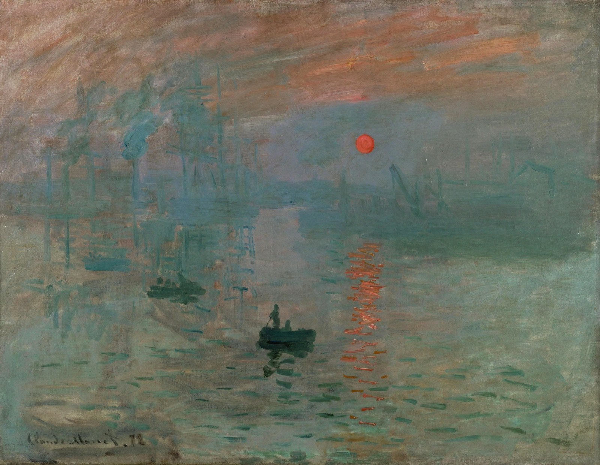

당신은
〈인상, 해돋이〉 앞에 선
관람객입니다
1872년 르아브르, 모네가 묵던 호텔 창밖의 항구

임시 영상
1872년 11월 13일 아침, 르아브르
날짜는 추정 · AI로 재현한 장면
모네는 이 아침을 이렇게 남겼습니다.

왜 같은 풍경을 계속 그렸을까?
1872년 르아브르, 모네가 묵던 호텔 창밖의 항구

임시 영상모네는 이 아침을 이렇게 남겼습니다.
왜 같은 풍경을 계속 그렸을까?